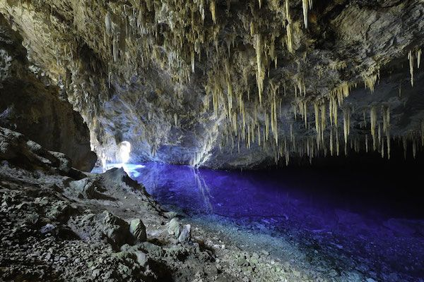
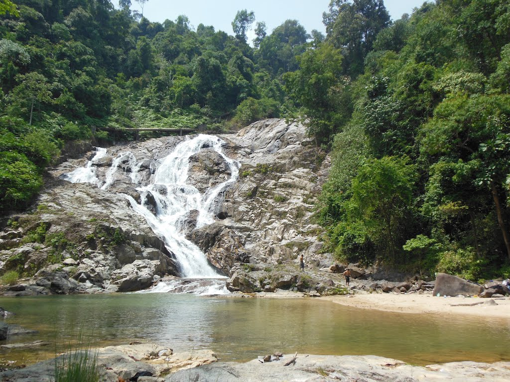
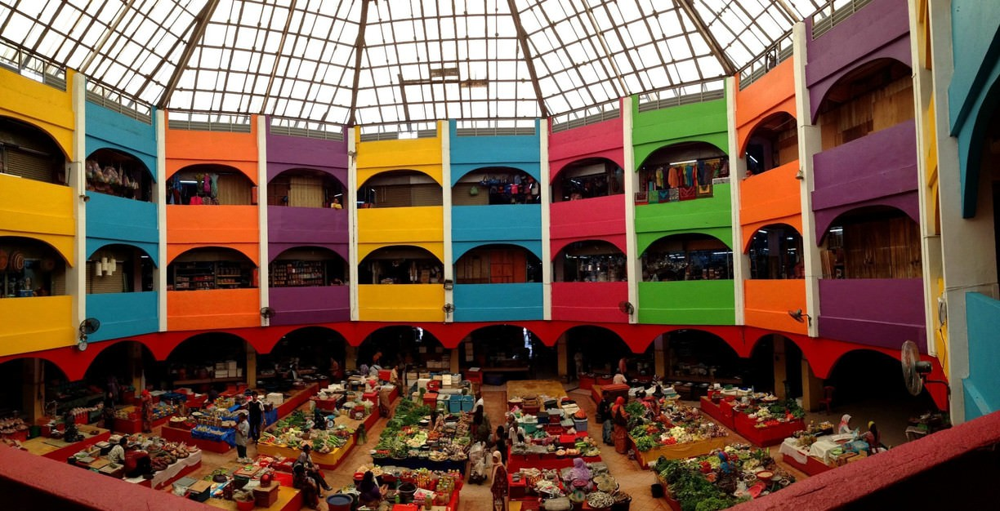
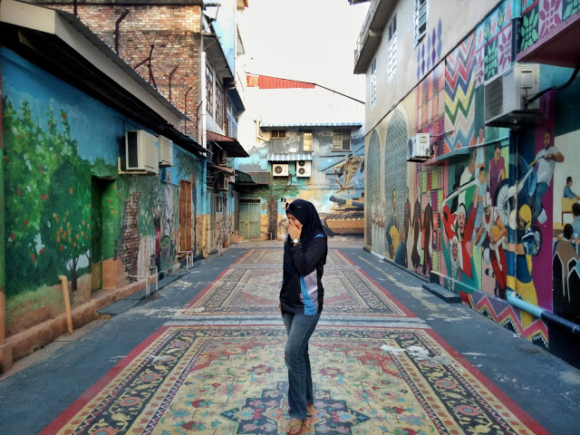

Wonders Of Kelantan
Kelantan is among the least visited states in Malaysia. Known as both the ‘Land of Lightning’ and ‘Balcony of Mecca’, the northeastern state advocates conservative Islam, meaning all visitors need to dress appropriately and respect its religious customs. Domestic flights connect capital Kota Bahru to a handful of cities in Malaysia, but the majority of arrivals tend to speed through on their way to Perhentian Highlands. Kota Bahru is worth a night: Attractive Islamic architecture combines with fascinating museums (Culture Trip recommends both Kelantan Museum and Museum Islam). But the city’s highlight is the nightly Pasar Malam (Night Market), serving delicious Kelantanese street food. Local-style beach resorts free of international tourists line the eastern coast while Gunung Stong State Park in the Kelantanese highlands offers hiking, waterfalls and caves.

Gua Ikan ( Kuala Terus, Dabong, Kelantan )
Address: Kuala Gris, 18200 Dabong, Kelantan
Wakaf Che Yeh
Wakaf Che Yeh is a suburb in Kelantan, Malaysia, in the southern part of Kota Bharu's metropolitan area. It is located about 7 kilometres from downtown Kota Bharu along the Kuala Krai Highway. The town is famous for its daily and weekly market. Wakaf Che Yeh has been progressing well for the last ten years.
Air Terjun Lata Berangin
Address: Jalan Kuala Krai - Gua Musang, 18000, Kuala Krai, Kelantan.
Siti Khadijah Market, Kota Bharu, Kelantan.
The Siti Khadijah Market is a market in Kota Bharu, Kelantan, Malaysia. The market is adjacent to the Balu Kubu Bazaar. This pasar is famous because half of it run my females.Address: Jalan Buluh Kubu, 15000 Kota Bharu, Kelantan
